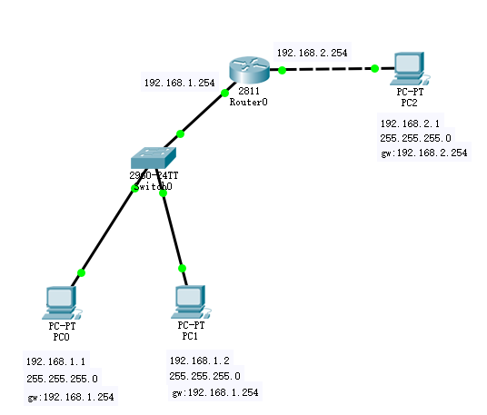

网络基础
OSI七层参考模型
应用层: 提供人机交互的界面和接口 数据
表示层: 提供一个格式转换的功能 数据
会话层: 主机和主机建立会话 数据
传输层: 传输控制的作用 数据段
网络层: IP地址的寻址 数据包
数据链路层: 数据进行效验 差错控制 进行MAC的寻址 帧
物理层: 透明的传输比特流 规定了传输介质的物理特性 电气和针脚特性
网桥和交换机划分冲突域
现在冲突域问题已经得到完美解决，目前交换机是通过“立交桥”的方式发送数据，交换机的每一个端口都是一个独立的冲突域
路由器划分广播域
网线排线
568A标准：白绿，绿，白橙，蓝，白蓝，橙，白棕，棕
568B标准：白橙，橙，白绿，蓝，白蓝，绿，白棕，棕
网线有两种做法，一种是交叉线，一种是平行（直通）线
交叉线的做法是：一头采用568A标准，一头采用568B标准
平行（直通）线的做法是：两头同为568A标准或568B标准，（一般用到的都是568B平行（直通）线的做法）
相同设备用交叉线（路由器和路由器之间 交换机和交换机之间 路由器和PC ）
不同设备用直通（路由器和交换机 交换机和PC）
子网掩码计算
十进制 二进制 主机数
255 = 128 + 64 + 32 + 16 + 8 + 4 + 2 + 1 >> 11111111 2^0=1 /32 这两个不用
254 = 128 + 64 + 32 + 16 + 8 + 4 + 2 + 0 >> 11111110 2^1=2 /31
252 = 128 + 64 + 32 + 16 + 8 + 4 + 0 + 0 >> 11111100 2^2=4 /30 最小为这个，因为有两个地址不能用
...
...
128 = 128 + 0 + 0 + 0 + 0 + + 0 + 0 >> 10000000 2^7=128 /25
0 = 0 + 0 + 0 + 0 + 0 + + 0 + 0 >> 00000000 2^8=256 /24
ICMP协议 因特网消息控制协议
ARP协议 （Address Resolution Protocol）
地址解析协议，广播请求，单播回应
pc0到pc1，一开始没有pc1的mac地址，先发arp广播，路由器、交换机、pc1均会收到arp广播。但是只有pc1才会回应pc0，并带上自己的mac地址，pc0就可以和pc1通信
网关
如果目的IPv4主机不在本地网络上，则源节点需要将帧发送到作为网关的路由器接口，或用于到达该目的的下一跳，下面的例子中pc0到pc2，位于不同的网络，将会把帧发送到网关192.168.1.254

vlsm（variable length subnet mask）
可变长子网掩码
B类子网掩码
21.32.233.69 00010101.00011111.11|101001.01000101
255.255.192.0 11111111.11111111.11|000000.00000000
与运算 00010101.00011111.11|000000.00000000
网络号 00010101.00011111.11|000000.00000000 21.32.192.0/18
广播地址 00010101.00011111.11|111111.11111111 21.32.255.255/18
第一个可用地址 21.32.192.1/18
最后一个可用地址 21.32.255.254/18
C类子网掩码
21.32.233.69 00010101.00011111.11101001.01|000101
255.255.255.192 11111111.11111111.11111111.11|000000
|
与运算 00010101.00011111.11101001.01|000000
|
网络号 00010101.00011111.11101001.01|000000 21.32.233.64/26
广播地址 00010101.00011111.11101001.01|111111 21.32.233.127/26
第一个可用地址 21.32.233.65/26
最后一个可用地址 21.32.233.126/26
正掩码
1做精确匹配，0做模糊匹配，1和0之间必须1在前且连续
反掩码
0做精确匹配，1做模糊匹配，0和1之间没有顺序
CIDR（classless inter-domain routing）
无类域间路由